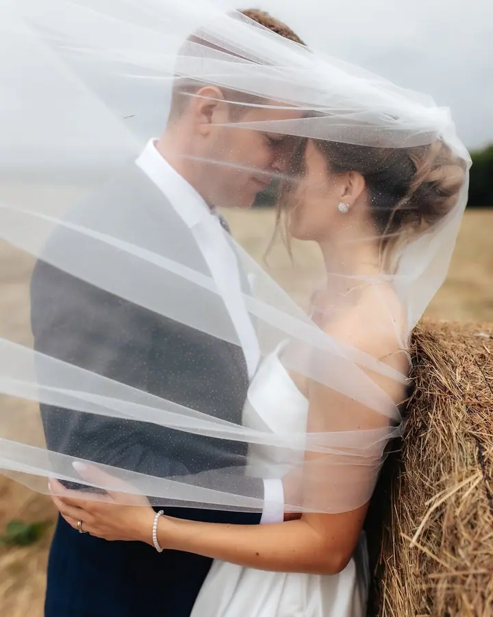
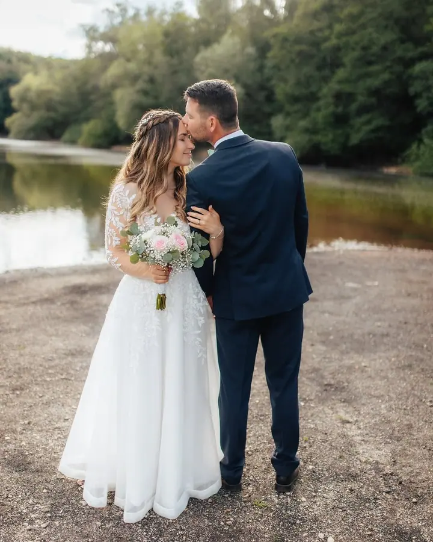
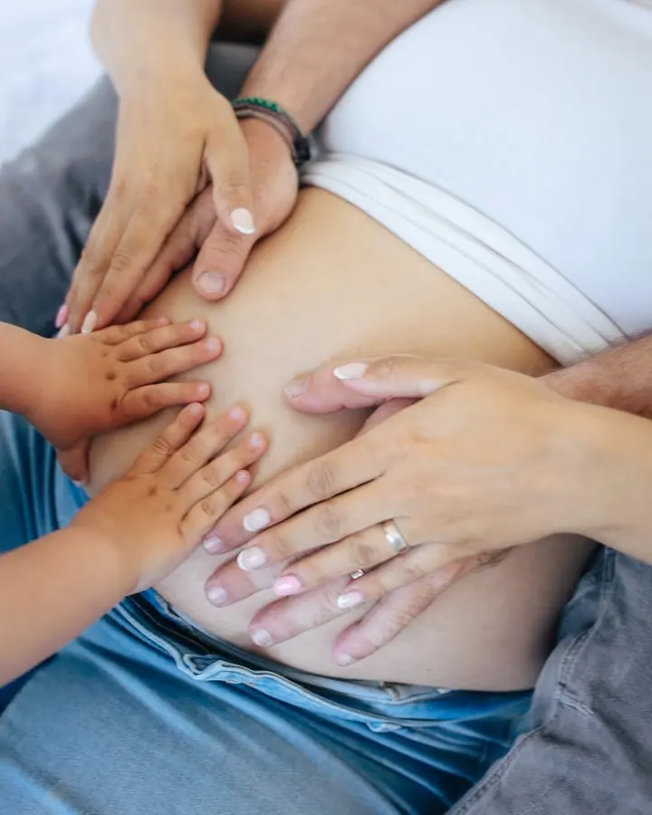
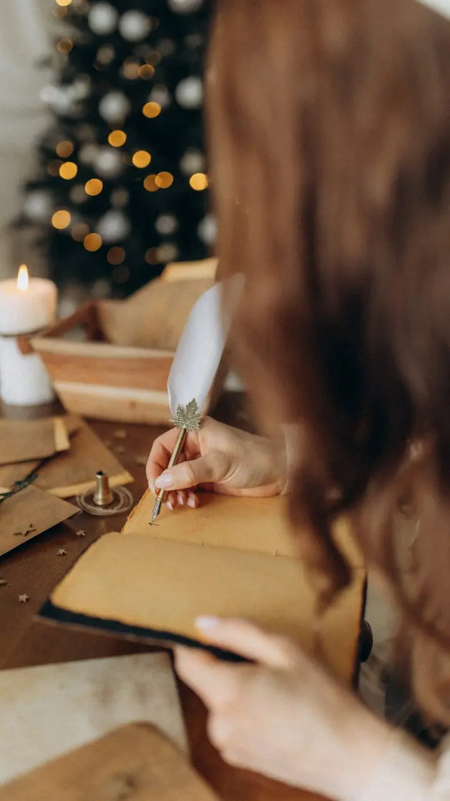

Svatební focení
Když půjdete uličkou, nebudou za vámi stát jen svědkyně, maminka nebo kamarádka. Budu tam i já, abych s vámi sdílela každý okamžik a zachytila ho navždy.

Jmenuji se Zdeňka Sojková a jsem svatební a rodinná fotografka z Teplic. Fotím svatby po celé republice, maminky v očekávání i celé rodiny a ve svém malém ateliéru si př…
Rezervovat termínFotím rodiny, miminka, svatby a všechno, co stojí za to zachytit. Miluju, když se při focení smějete, zapomenete na nervozitu a necháte se unést momentem. Nejvíc mě baví ty malé detaily: pohled, úsměv, ruce, které se drží.


Nejsem jen fotografka. Jsem maminka malé Elišky a manželka svého parťáka, se kterým sdílím už polovinu svého života. Díky nim i díky vám můžu dělat to, co mě baví a naplňuje.
Po deseti letech focení jsem si otevřela malý ateliér. Je to místo, kde můžeme zkoušet nové nápady, tvořit rodinné portréty a projekty. Kromě toho pro vás umím zařídit i zážitkové focení, třeba s vlkem Benjim nebo na letišti v kokpitu letadla.
Co fotím
Když půjdete uličkou, nebudou za vámi stát jen svědkyně, maminka nebo kamarádka. Budu tam i já, abych s vámi sdílela každý okamžik a zachytila ho navždy.
Pořád nemáte hezkou fotku do rodinného alba? Ráda s vámi strávím čas a zachytím šťastné chvíle, které život přináší.
Možná se cítíte unavené nebo oteklé, ale věřte, že jste krásné. Nosíte v sobě nový život a já vám to vzácné období ráda zachytím.
Můj malý ateliér je po celý rok neutrálně vyzdobený a od září do prosince se mění ve vánoční. Tvoříme v něm rodinné portréty a nové nápady.
Postup
Vyplníte formulář, nebo mi rovnou zavoláte. Domluvíme se na detailech focení včetně oblečení a make-upu.
U svatby se vidíme osobně a před velkým dnem si spolu projdeme poslední kroky i harmonogram.
Až do focení spolu zůstáváme v kontaktu a průběžně řešíme případné změny.
Do týdne vám pošlu fotografie v elektronické podobě. U svatby je to doba delší.
Otázky
Sídlím v Teplicích a fotím v Ústeckém kraji a ve svém ateliéru. Svatby fotím po celé České republice.
Základní balíček s obřadem, portréty a skupinkami a s minimálně 50 upravenými fotkami stojí 9 499 Kč. Komplet balíček na zhruba 10 hodin s minimálně 500 fotkami stojí 19 999 Kč. Domluvit se můžeme i na individuálním balíčku.
Fotíme zhruba 30 až 45 minut, předem spolu probereme konzultaci a dostanete 10 upravených fotek elektronicky. Rodinné focení začíná na 2 800 Kč, každá další fotka je za 200 Kč.
Ano, vizážistku je možné domluvit k rodinnému i svatebnímu focení. Spolupracuji s make-up vizážistkou Nikol Záškolnou.
